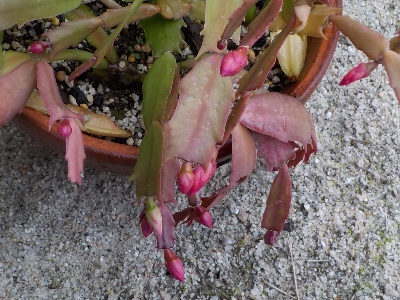
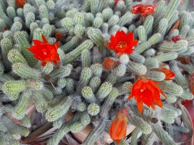
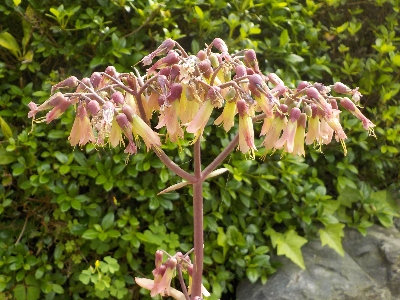
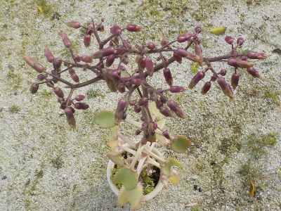
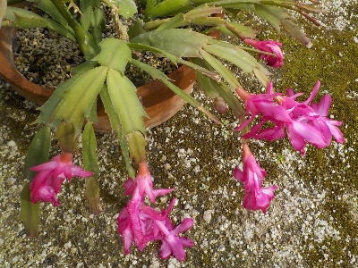
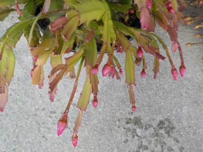
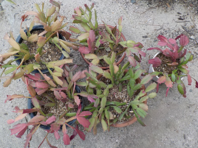
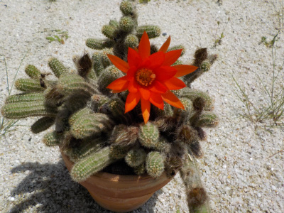
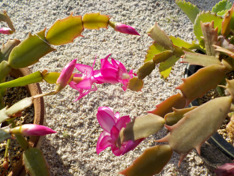
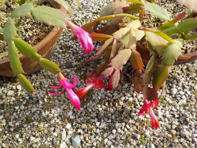

遊びで植物を育てよう
2024/12/22
シャコバサボテンが年内に咲きだしました。

年内は無理かと思っていましたが咲きました。
これからしばらくの間、花が楽しめそうです。
【多肉植物TOP】
【花TOP】
【園芸TOP】
2024/12/01
シャコバサボテンを家の中にしまいます。

12月になったので家の中に入れることにしました。
まだつぼみが小さいので年内に開花は無理かな。
【多肉植物TOP】
【花TOP】
【園芸TOP】
2024/06/02
ビャクダンが開花中です。

毎年何もしていないので、毎年同じ感じで咲いてます。
何か新しい植え方ってないかな？簡単なのに見栄えがすごくいい植え方とかあればいいんだけどな。
植木鉢の置き方とか、植木鉢自体の形を変えようかな。
【多肉植物TOP】
【花TOP】
【園芸TOP】
2024/04/28
子宝弁慶草の花は終っていませんでした。

ずいぶん前に花が咲いていたと思っていたんですが、見間違えだったみたい。
ただいま開花中です。
【多肉植物TOP】
【花TOP】
【園芸TOP】
2024/03/30
子宝弁天草の花が終った後です。

なにやら実が出来そうです。
種が出来ると枯れるって情報がネットにありました。
花が咲くのにニョキニョキと背が高くなったので、この状態をキープするのは無理でしょうね。きっと枯れますね。
【多肉植物TOP】
【花TOP】
【園芸TOP】
2024/03/17
ジャコバサボテンを外に出しました。

花がだいぶ少なくなりました。
気温が暖かくなったにで、屋外の軒下で育てることにしました。
【多肉植物TOP】
【花TOP】
【園芸TOP】
2023/11/25
ジャコバサボテンを屋内に入れました。

ツボミが沢山出来ました。今年は植替えをしたせいか、成長してるし花数が多いです。
年末くらいに開花するかな。
【多肉植物TOP】
【花TOP】
【園芸TOP】
2023/05/30
ジャコバサボテンの土の入れ替えと剪定をしました。

一鉢葉っぱがぎゅうぎゅうになったせいか、葉っぱが赤っぽくなってしおれてしまいました。
何年も植えっぱなしだったのが原因かなと思い、鉢から引っこ抜いて土に腐葉土を追加しました。
一鉢やったついでに他の鉢も植え替えして、伸びた葉っぱを剪定しました。
剪定した葉っぱを使って、一鉢作りました。
【多肉植物TOP】
【花TOP】
【園芸TOP】
2023/05/21
ビャクダンが一つ咲きました。

これから次々と開花の予定です。
【多肉植物TOP】
【花TOP】
【園芸TOP】
2022/12/04
今年は順調にジャコバサボテンが咲いています。

ジャコバサボテンが少しづつ咲きだしました。
この調子だと長い期間花が見れそうです。
年末年始に活躍しそうです。
【多肉植物TOP】
【花TOP】
【園芸TOP】
2022/03/21
今頃になってジャコバサボテンが咲きだしました。

もう開花しないんじゃないかと思っていました。
3月に開花なんてあるんですね。
ジャコバサボテンは日照時間で開花時期が調整出来るみたいなので、今後は屋内に入れる時期を鉢ごとに変えようと思います。
【多肉植物TOP】
【花TOP】
【園芸TOP】
2021/12/25
数年に一度の寒波が来るそうなので、サボテンを屋内に入れました。
2021/12/25
年内はデンマークカクタスの花が咲かないかな。
2021/05/30
今年もビャクダンが咲きました。
2021/04/04
子宝弁慶草を土に植替えしました。
2021/01/17
子宝弁慶草は寒さで死にました。
2020/06/07
サボテンのビャクダンの花が咲いています。
2020/05/16
暖かくなって子宝弁天草が急成長しています。
2020/02/15
サボテンが枯れだしました。
2019/12/15
デンマークカクタスの花が重そうです。
2017/11/12
多肉植物を土なしで育ててみます。
【多肉植物TOP】
【花TOP】
【園芸TOP】
畑仕事じゃないよ。
【おいしいものを食べよう。】【たくさん寝よう。】
【ソロ活をしよう!】【季節感のあることをしよう。】【動画視聴はほどほどに。】【当サイトの全てのコンテンツは無断転載禁止です。】